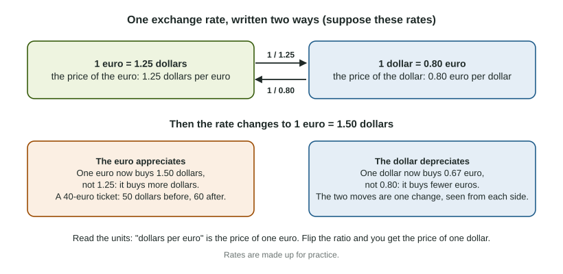

Exchange Rates
An exchange rate is the price of one currency in another, and it can be written two ways that are reciprocals of each other.
Part 1 · Hook
Why this matters
Part 2 · Before you start
What this builds on
Part 3 · Prerequisite check
Quick check before you start
1. A US tourist pays for a hotel in Spain. How does the balance of payments record it?
- As an import of services, a debit in the US current account
- As a credit in the US capital and financial account
- As an export of services by the United States
- It is not recorded, since no asset is bought
Show the answer
Money leaves the US to pay for a service bought abroad: an import of services, a current account debit.
- Correct: As an import of services, a debit in the US current account:
- As a credit in the US capital and financial account:
- As an export of services by the United States:
- It is not recorded, since no asset is bought:
2. Which function of money lets you compare the prices of two things, such as a jacket and a phone?
- Unit of account
- Store of value
- Medium of exchange
- Legal tender
Show the answer
A unit of account is a common measure of value. An exchange rate lets you compare prices set in two different units.
- Correct: Unit of account:
- Store of value:
- Medium of exchange:
- Legal tender:
Part 4 · See it
See it first

Part 5 · Step by step
How it works, step by step
- The price of a euro rises from 1.25 dollars to 1.50 dollarseach euro buys more dollars: the euro appreciates
- Each euro buys more dollarseach dollar buys fewer euros (0.80 to about 0.67): the dollar depreciates
- The dollar depreciates against the eurogoods priced in euros cost Americans more dollars, and goods priced in dollars cost Europeans fewer euros
Part 6 · Key ideas
Key ideas
- An exchange rate is the price of one currency in units of another: "1.25 dollars per euro" is the price of one euro.
- The same rate can be written either way; one quote is the reciprocal of the other: 1.25 dollars per euro is euro per dollar.
- A currency appreciates when one unit buys more of the other currency, and depreciates when it buys less. When one currency appreciates, the other depreciates.
- To convert a price, multiply it by a rate whose units cancel: euros times dollars per euro gives dollars.
Part 7 · Misconception
A common mistake
The wrong idea: A bigger number in an exchange rate quote always means that currency got stronger.
What actually happens: It depends on the units. In "dollars per euro", a bigger number means the euro appreciated and the dollar depreciated. Flip the quote to euros per dollar and the same change makes the number smaller.
Part 8 · Check yourself
Check yourself
Exam-style questions. Anything you miss goes into your review queue.
Data
The price of the arl in bels
| Year | Bels per arl |
|---|---|
| 1 | 2.0 |
| 2 | 2.5 |
| 3 | 1.6 |
1. Use the table. In Year 2, what is the price of one bel in arls (arls per bel)?
Type a number. A four-function calculator is allowed, as on the exam.
Show the answer
The table gives bels per arl. Flip it: arls per bel. One arl buys 2.5 bels, so one bel buys 0.4 of an arl.
- Answer: 0.4
2. Use the table. What happened from Year 1 to Year 2?
- The arl appreciated and the bel depreciated
- The arl depreciated and the bel appreciated
- Both currencies appreciated
- Neither changed in value, since prices did not change
Show the answer
More bels per arl: the arl appreciated and the bel depreciated.
- Correct: The arl appreciated and the bel depreciated: Right: one arl bought 2.0 bels and then 2.5 bels, so the arl buys more bels (it appreciated) and each bel buys less of an arl (it depreciated).
- The arl depreciated and the bel appreciated: The quote is bels per arl, so a higher number means each arl buys more bels: the arl gained value.
- Both currencies appreciated: When one currency buys more of the other, the other buys less of the first: one appreciates as the other depreciates.
- Neither changed in value, since prices did not change: The exchange rate itself changed, from 2.0 to 2.5 bels per arl; that is a change in the value of each currency against the other.
3. Use the table. In Year 3, a hotel in Belvia charges 300 bels a night. What does one night cost an Arland traveler, in arls?
Type a number. A four-function calculator is allowed, as on the exam.
Show the answer
Turn the rate into arls per bel, , then multiply: arls. Check the units: bels times arls per bel gives arls.
- Answer: 187.5
4. What is an exchange rate?
- The interest rate a central bank pays on reserves
- The price of one currency in units of another
- A country's exports divided by its imports
- The gap between two countries' inflation rates
Show the answer
An exchange rate is the price of one currency expressed in units of another currency.
- The interest rate a central bank pays on reserves: That is an administered interest rate of a central bank, not the price of a currency.
- Correct: The price of one currency in units of another: Right: for example, the number of dollars one euro costs, or the number of euros one dollar costs.
- A country's exports divided by its imports: That ratio compares trade flows; an exchange rate is a price of money in terms of other money.
- The gap between two countries' inflation rates: Inflation differences can move exchange rates, but an exchange rate is the price of one currency in another.
5. A rate quoted as arls per bel rises from 0.40 to 0.50. What happened?
- The arl appreciated against the bel
- The bel depreciated against the arl
- Nothing can be said without a quote in bels per arl
- The bel appreciated against the arl
Show the answer
Arls per bel is the price of the bel; a higher price means the bel appreciated.
- The arl appreciated against the bel: It now takes more arls to buy one bel, so each arl is worth less: the arl depreciated.
- The bel depreciated against the arl: One bel now buys 0.50 arl instead of 0.40, which is more, so the bel gained value.
- Nothing can be said without a quote in bels per arl: One quote is enough: the other is its reciprocal, so a rise in arls per bel is a fall in bels per arl.
- Correct: The bel appreciated against the arl: Right: the quote is the price of a bel in arls, and that price rose, so the bel appreciated (and the arl depreciated).
6. A concert ticket in Arland costs 60 arls. The exchange rate is 1.5 bels per arl. What does the ticket cost a visitor from Belvia, in bels?
Type a number. A four-function calculator is allowed, as on the exam.
Show the answer
Multiply the arl price by bels per arl: bels. Units check: arls times bels per arl gives bels.
- Answer: 90
Part 9 · Summary
Summary
Part 10 · Up next
What comes next
Part 11 · Connections